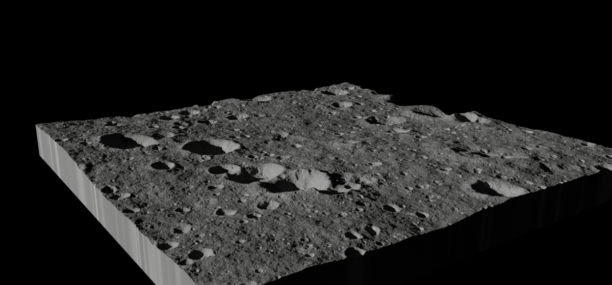

Tutorials
One subject per tutorial, built step by step in Blender. Each step is a complete .bn file to paste into a node editor, with the picture it renders.

Lunar ground
Geometry Nodes and a material, 8 steps.
A crater profile from three curves, a Voronoi field of craters, layers of every size in a Repeat zone, a slab, a dust material that reads an attribute of the geometry, and details down to the millimetre.

Mini moon
Geometry Nodes and a material on a sphere, 5 steps.
Crater sites scattered on the surface by Poisson disk, each crater measured in the plane of its normal and dug along the surface's normals, layers of every size, a dust material, and the phases.